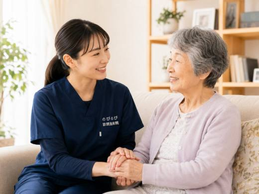

年齢を重ねると、背中が少しずつ丸くなり、前かがみの姿勢が固定されてくることがあります。円背（亀背）と呼ばれる状態です。見た目が変わるだけでなく、腰や背中、首肩がこわばって痛んだり、前が見づらく歩きにくくなったり、食事や呼吸がしづらくなったりと、暮らしの困りごとが少しずつ増えていきます。円背とどう付き合うか、医療機関を先に頼るべきとき、そして訪問鍼灸でできることを、ご家族の目線で整理しました。
はじめに要点だけ。円背は背骨や筋肉の加齢変化、姿勢のくせ、圧迫骨折などが重なって進みます。骨の変形そのものを施術で元に戻すことはできず、そこは医療が主になります。急に背中が曲がった、強い背部痛、脚に力が入らないといったときは、まず整形外科へ。訪問鍼灸でできるのは、こわばった背中・腰・胸まわりの筋肉をやわらげ血のめぐりを促す補助と、鍼灸に加えて、動かせる範囲を保つ機能訓練も重ねること。医師の同意があれば医療保険が使え、自己負担は1回およそ395円が目安です。
円背と亀背は、どう違うのでしょうか
検索でよく聞かれるのが、円背と亀背は違うものなのか、という点です。結論から言うと、どちらも背中（背骨の胸のあたり）が丸く曲がった状態を指す言葉で、日常的にはほぼ同じ意味で使われます。亀の甲羅のように見えることから、円背は亀背とも呼ばれてきました。
読み方は、円背が「えんぱい」、亀背が「きはい」です。どちらもふだん口に出す言葉ではなく、健康診断の記録やリハビリの書類で目にして、はじめて意味を調べる方が多いところです。年齢を重ねて起こるものは、老人性円背、老人性亀背と呼ばれることもあります。
あえて区別して使う場合は、次のような目安で語られることがあります。円背は、背中全体がなだらかに、弓なりに丸くなった状態。亀背は、背骨の一部が角ばって強く突き出た状態です。背骨の圧迫骨折などで特定の場所が大きくつぶれると、そこだけが鋭く曲がり、亀背と呼ばれる形になりやすいと言われます。
ただし、この呼び分けは書き手によって幅があり、厳密に線が引かれているわけではありません。ご自身やご家族の背中がどちらにあたるのか、原因が加齢による変化なのか圧迫骨折なのかは、レントゲンなどで医師が判断することです。呼び名にこだわるより、いつから、どれくらいの速さで曲がってきたか、痛みやしびれをともなうかを医師に伝えるほうが役に立ちます。
受診して「年齢によるものだから」と言われ、そこで行き止まりになったように感じる方もおられます。医療でできることと、こわばりの手入れでできることは別の話です。そのあたりは病院でよくならないと言われた方へ｜在宅の訪問鍼灸マッサージにまとめました。
円背という状態そのものと、放っておいたときに起こることは円背とは？背中が丸くなる原因と、放置したときに起こることに、曲がった背中が元に戻るのかという点は亀背は治りますか？曲がった背中が戻るかと、今できることに、それぞれ分けて書きました。
どのくらい曲がると、亀背と呼ばれるのでしょうか
ここも検索でよく聞かれます。数値で線を引いた基準が日常で使われることは、ほとんどありません。医療の場では背骨の傾きを角度で測る方法がありますが、それはレントゲンを撮って初めて出る数字です。呼び名そのものは、見た目と画像をあわせて医師が判断しています。
ですから、ご家族が気づく段階で役に立つのは角度ではなく、次のような目印です。壁に背中とかかとをつけて立ったとき、後頭部が壁につかない。あお向けで寝ると背中が浮いて、腰や背中が痛む。若いころより身長が4センチ以上縮んだ。上着や着物の丈が合わなくなった。前を見ようとするとあごが上がってしまう。
こうした変化は、角度の数字よりも医師に伝わります。いつごろから、どれくらいの速さで進んだかを添えられると、なお役に立ちます。身長の縮みと骨のつながりは骨がもろくなると背中は丸くなる？骨粗鬆症と円背のつながりにまとめました。
円背（亀背）は、どうして起こるのでしょうか
背中が丸くなり、前かがみの姿勢がだんだん固まってくる。亀の甲羅のように見えることから、円背は亀背とも呼ばれます。原因は一つではありません。背骨そのものの加齢変化、背中を支える筋肉の衰え、長年の姿勢のくせ、そして背骨がもろくなって少しずつつぶれる圧迫骨折。こうした要素がいくつも重なり、時間をかけてじわじわと背中が丸まっていきます。
丸まった背中は、姿を変えるだけではありません。前が見えにくくて歩きづらい、顔を上げ続けるのがつらい、食事のときに飲み込みにくい、胸が圧迫されて息が浅くなる。こうした暮らしの不便が、一つ、また一つと積み重なっていくのが円背のつらさです。進み方には個人差があり、ゆっくりのこともあれば、ある時期から目立ってくることもあります。
なかでも大きいのが、骨がもろくなって背骨がつぶれることです。前寄りにつぶれると背骨がくさび形になり、その分だけ上半身が前に傾きます。これが何か所か重なると曲がりは一気に進みます。痛みのないまま起きていることもあり、そのつながりは骨がもろくなると背中は丸くなる？骨粗鬆症と円背のつながりにくわしく書きました。
鍼灸より先に、整形外科などへ向かってほしいとき
鍼やお灸のケアを考える前に、確かめていただきたいことがあります。背中の丸まりや痛みが急に強くなった、転んだあとから背中や腰が強く痛む、脚に力が入らない、急にしびれが強くなった、排尿や排便のコントロールがしにくくなった。こうしたときは、背骨の圧迫骨折や神経のトラブルが隠れていることがあります。まずはかかりつけの先生や整形外科など、医療機関にご相談ください。
円背はゆっくり進むことが多いものですが、こうした急な変化があるときだけは話が別です。どんなときに医療機関へ向かえばよいか、その目安を家族で共有しておくと、いざというときに迷わずに動けます。診断や骨の治療は医療が主になり、鍼灸や手技はそこを補う立場だと考えていただくとよいと思います。
何科にかかればいいのでしょうか
背骨の状態を確かめるという目的なら、整形外科です。レントゲンで背骨の形やつぶれ方を見て、必要なら骨密度の検査もしてもらえます。急に曲がってきた、強い背中の痛みがある、脚に力が入らないといったときも整形外科が先です。
ふだん通っている内科などのかかりつけ医がおられるなら、まずそこで相談されるのでも構いません。飲んでいる薬や持病を把握している先生のほうが、どこへ紹介すべきかを判断しやすいからです。骨がもろくなっていることが背景にある場合、その治療は内科で続けておられることもあります。
「年齢によるものだから」と言われてそこで止まってしまう方もおられます。骨の治療でできることと、こわばりの手入れでできることは別の話です。そのあたりは病院でよくならないと言われた方へ｜在宅の訪問鍼灸マッサージに書きました。通院そのものがつらくなっている場合は、訪問での施術も選択肢になります。
なぜ背中が丸まると、腰や背中が痛むのか
背中が丸くなると、その前かがみの姿勢を支えるために、首から背中、腰にかけての筋肉が引っぱられ続けます。休むひまなく緊張が続くので、こわばりや張り、痛みが生まれやすくなります。円背の方が腰や背中の痛みを訴えることが多いのは、このためです。首肩の重だるさが一緒に出てくることもよくあります。
さらに前かがみが続くと、胸やおなかが圧迫されて呼吸が浅くなり、動くのがおっくうになって、いっそう体を動かさなくなります。動かないと筋肉は固まり、姿勢はますます固定される。この悪循環をどこかでゆるめることが、在宅ケアのねらいになります。
背中だけでなく、首から脚のつけ根まで確かめます
ご自宅で確かめるのは、丸まった背中だけではありません。首や肩、腰、そして脚のつけ根まわりまで、体全体のこわばりと、どの姿勢でどこが痛むのかを見ていきます。背中の丸まりは背中だけの問題ではなく、体全体のバランスがゆがんだ結果として表れていることが多いからです。
このとき心がけているのは、無理に背中を伸ばそうとしないことです。長い時間をかけて固まった姿勢を急に変えようとすると、かえって痛みが強まることがあります。まずは今あるこわばりをやわらげ、少しでも楽な姿勢で過ごせるように整えていきます。どこまで動かすか、何を避けるかは、その日の状態を見ながら決めていきます。
鍼やお灸で、張りつめた背中をゆるめる
鍼やお灸には、こわばった首・肩・背中・腰の筋肉をやわらげ、血のめぐりを促し、痛みを軽くする働きが期待できます。背中の張りがゆるむと、呼吸が少し楽になったり、体を動かしやすくなったりすることがあります。感じ方には個人差があり、効き方も人それぞれです。
のびのび訪問施術院で保険を使って行うのは鍼やお灸による施術です。そこに、手で背中や胸まわりをやさしくほぐすケアを組み合わせています。これらについて別途の料金はいただきません。ほぐしたあとに、前とのちがいをご自身で口にされる方がいます。毎日お風呂上がりに体操を続けている方から「最近そうそう硬くならんようになったんですよ」とうかがったこともありました。感じ方には個人差があります。
動かせる範囲を保つ、機能訓練という支え
こわばりをゆるめることと合わせて、動かせる範囲を保つ機能訓練も組み合わせます。いずれも施術の一部で、別に料金をいただくことはありません。丸まった姿勢のまま体を動かさずにいると、関節や筋肉がさらに固まり、寝返りや立ち座りといった当たり前の動作までしづらくなっていきます。
痛くない範囲で肩をゆっくり回す、胸を軽く開く、脚のつけ根を動かす。こうした穏やかな動きを、体の状態に合わせて少しずつ重ねていきます。骨の変形そのものを戻すものではありませんが、今できる動きを手放さずにおくことが、日々の暮らしやすさを保つ助けになります。
家では、背中を反らさず「支える」工夫を
毎日の暮らしのなかにも、体をいたわる工夫があります。座るときは、背もたれとの間にクッションを入れて背中を支える、いすの高さを合わせて立ち座りをしやすくする。それだけでも、背中や腰にかかる負担は変わってきます。同じ姿勢を長く続けず、ときどき体の向きを変えることも助けになります。
気をつけたいのは、背中を無理に反らさないことです。よかれと思って強く伸ばそうとすると、かえって痛める心配があります。体の様子を見ながら肩を回したり胸を軽く開いたりするくらいがちょうどよく、何をどれだけ行い何を避けるかは、体の状態を見ながらお伝えします。冷えると筋肉は固まりやすいので、背中や腰を冷やさない工夫もしておきたいところです。
いすや車いす、食事のとき、ベッドで休むとき。場面ごとの支え方には、それぞれこつがあります。クッションを入れる位置や机の高さといった具体的なところは、円背の方の座り方・寝かせ方｜車いす・食事・ベッドの支え方に分けてまとめました。介護に入られている方にも読んでいただける形にしています。
痛みがやわらいだときに、変わってくること
背中や腰の痛みがやわらぐと、寝返りが打ちやすくなったり、いすからの立ち上がりが楽になったりします。施術のあとに「夜、布団に入ったときに、なんでこんなに快適なんだろうと思った」と話された方もいます。もちろん、変化の出方には個人差があります。
丸まった姿勢そのものを大きく変えるのはむずかしくても、こわばりをゆるめ痛みを軽くすることで、日々の動作の一つひとつが少し楽になります。その積み重ねが、いまの暮らしを保つことにつながります。
出かけずに、いつもの姿勢のまま受けられる
背中が丸くなって歩きづらい方、腰や背中が痛む方にとっては、治療のために出かけること自体が大きな負担です。長く座っていられない、乗り物での移動がこたえる。訪問なら、そうした負担をかけずに、住み慣れた家で、その方がいちばん楽な姿勢のまま受けられます。ふだんの体の使い方を見ながらケアできるのも、生活の場に入る訪問ならではです。
施術にあたるのは、はり師・きゅう師の国家資格をもつ担当者です。別途の出張費（出張料・交通費）はかからず、エリア内はどこでも同じ料金でうかがいます。お住まいの状況や体調に合わせて、日取りや回数も相談しながら進めていきます。
費用は保険で、1回約395円から
のびのび訪問施術院の施術は、医師の同意にもとづいて医療保険が使えます。1回の施術は総額3,950円で、自己負担が1割の方なら約395円です。キャンペーン価格ではなく、公的医療保険にもとづく正規の料金です。たとえば週2回なら、ひと月およそ3,160円（1割の方）が自己負担の目安になります。
この費用は医療保険で計算し、介護保険の区分支給限度額とは別の枠で使えます。ほかの介護サービスの枠とは別に受けられるということです。お支払いは月ごとにまとめてお願いしています。内訳はあとからでも確認できます。医師の同意書が必要になりますが、その手続きはのびのびがお手伝いします。
よくある質問
円背と亀背の違いは何ですか？
どちらも背中が丸く曲がった状態を指す言葉で、日常的にはほぼ同じ意味で使われます。区別する場合は、円背は背中全体がなだらかに丸い状態、亀背は背骨の一部が角ばって強く突き出た状態を指すことがあります。ただし呼び分けは書き手によって幅があり、原因や診断名の判断は医師の役割です。
丸くなった背中は、施術で元に戻りますか？
長い時間をかけて固まった背中の丸まりを、施術でまっすぐに戻すことはむずかしいのが実際です。骨の変形そのものは医療が主に扱う部分になります。鍼灸や手技でできるのは、こわばった筋肉をやわらげて痛みを軽くし、動かせる範囲を保つこと。無理に伸ばすのではなく、今より楽に過ごせるよう整えていきます。
亀背は何科にかかればいいですか？
背骨の状態を確かめるなら整形外科です。レントゲンで背骨の形やつぶれ方を見て、必要なら骨密度の検査もしてもらえます。ふだん通っているかかりつけ医がおられるなら、まずそこで相談されるのでも構いません。急に曲がってきた、強い背中の痛みがある、脚に力が入らないといったときは、整形外科を先にしてください。
何度以上曲がると亀背なのですか？
日常で使われる数値の基準はありません。医療の場では背骨の傾きを角度で測る方法がありますが、レントゲンを撮って初めて出る数字です。ご家族が気づく段階では、壁に背をつけて後頭部がつかない、身長が4センチ以上縮んだ、あお向けで背中が浮くといった目印のほうが役に立ちます。
円背そのものは保険の対象になりますか？
背中が丸いという状態そのものではなく、それに伴う腰や背中の慢性的な痛み・しびれなどで医師が治療の必要を認めた場合に、鍼やお灸による施術が保険の対象になります。まずは体の状態を見せていただき、対象になるかどうかも含めてご説明します。
要介護認定を受けていなくても利用できますか？
利用できます。この施術は医療保険を使うもので、介護保険とは別の仕組みです。要介護認定の有無にかかわらず、慢性的な痛みやこわばりについて医師が同意し、通院がむずかしい状況であれば対象になります。介護保険の限度額とも別枠なので、ほかのサービスの枠とは別に受けられます。
円背で呼吸が浅い気がします。鍼灸で楽になりますか？
円背で胸が狭くなり、息が浅く感じられることがあります。胸や背中のこわばりをやわらげることで呼吸が楽になる助けになる場合もありますが、息苦しさが強いときや急に悪くなったときは、まず医師にご相談ください。
背中が丸くなってきた家族に、まず何ができますか？
急な変化がないかを確かめるのが先です。急に曲がった、強い背部痛、脚に力が入らないといったときは整形外科へ。そうした心配がなければ、座り方で背中を支える、同じ姿勢を続けない、冷やさないといった穏やかな工夫から。こわばりや痛みが続くなら、鍼灸でのケアも選択肢になります。
痛みはないのですが、姿勢だけ気になります。頼めますか？
保険が使えるのは、痛みやこわばりなどがあって医師が治療の必要を認めた場合です。痛みがなく姿勢だけが気になるという段階では対象にならないこともあります。判断に迷うときは、体の状態を見せていただいたうえでご説明しますので、一度ご相談ください。
対応しているのはどの地域ですか？
大阪府では豊中市・吹田市・茨木市・高槻市・箕面市・摂津市・池田市、大阪市では淀川区・東淀川区・都島区・北区・旭区、兵庫県では尼崎市・伊丹市にうかがえます。エリア内は別途の出張費がかからず、どこでも同じ料金です。

寝て過ごす時間が長い高齢の方の、肩甲骨まわり・背中のはりと在宅の鍼灸ケア
続きを読む
背骨が左右に曲がる（側弯症）の痛み・姿勢でお悩みの方へ｜訪問鍼灸マッサージ
続きを読むわき腹・背中の刺すような痛み（肋間神経痛）でお悩みの方へ｜訪問鍼灸マッサージ
続きを読む
高齢のご家族の足のむくみに｜原因と受診の目安、訪問での鍼灸・マッサージができること
続きを読む
背骨の圧迫骨折のあとの痛みとケア｜自宅で受ける訪問鍼灸マッサージ
続きを読む